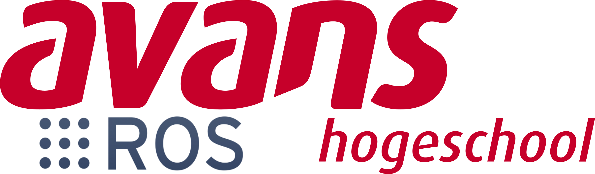

Avans: ROS2 Industrial 
Contents:
Algemene informatie
ROS2 Basics Workshop
ROS2 Packages and Nodes
ROS Topics: Publishers and Subscribers
ROS2 Services
ROS2 Actions
ROS2 Parameters
ROS2 Launch files
ROS2 Creating packages for Python applications
MicroROS ESP32 implementatie van range-sensor
ROS2 urdf
ROS2 navigation
ROS2 industrial manipulation
ROS2_industrial_transferframes
Referenties
Avans: ROS2 Industrial
ROS2 Basics Workshop
ROS2 Actions
Bekijk paginabron
ROS2 Actions
On request
Officieel Understanding actions